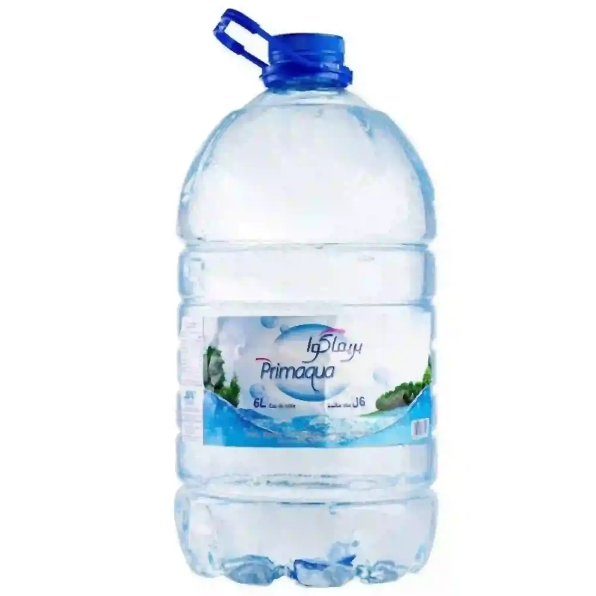

Prix de l'eau Primaqua en Tunisie
Bouteille et stika, mis à jour le 25 septembre 2026
L'eau Primaqua est vendue en 6 L et 19 L chez Aziza, Carrefour, Géant et Monoprix. La bouteille la moins chère coûte 2,340 DT (6 L chez Carrefour). Au litre, Primaqua 6 L est classée 2e sur 2 marques en bonbonne (5 à 19 L).
| Format | Bouteille | Stika | Magasins |
|---|---|---|---|
| 6 L 0,390 DT/L | 2,340 DT | — | Carrefour 2,340 DT · Géant 2,390 DT · Monoprix 2,460 DT · Aziza 4,190 DT |
| 19 L 0,282 DT/L | 5,350 DT | — | Carrefour 5,350 DT |